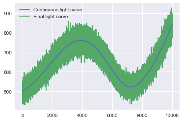
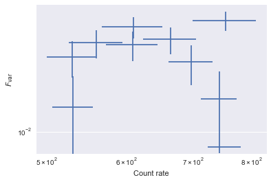
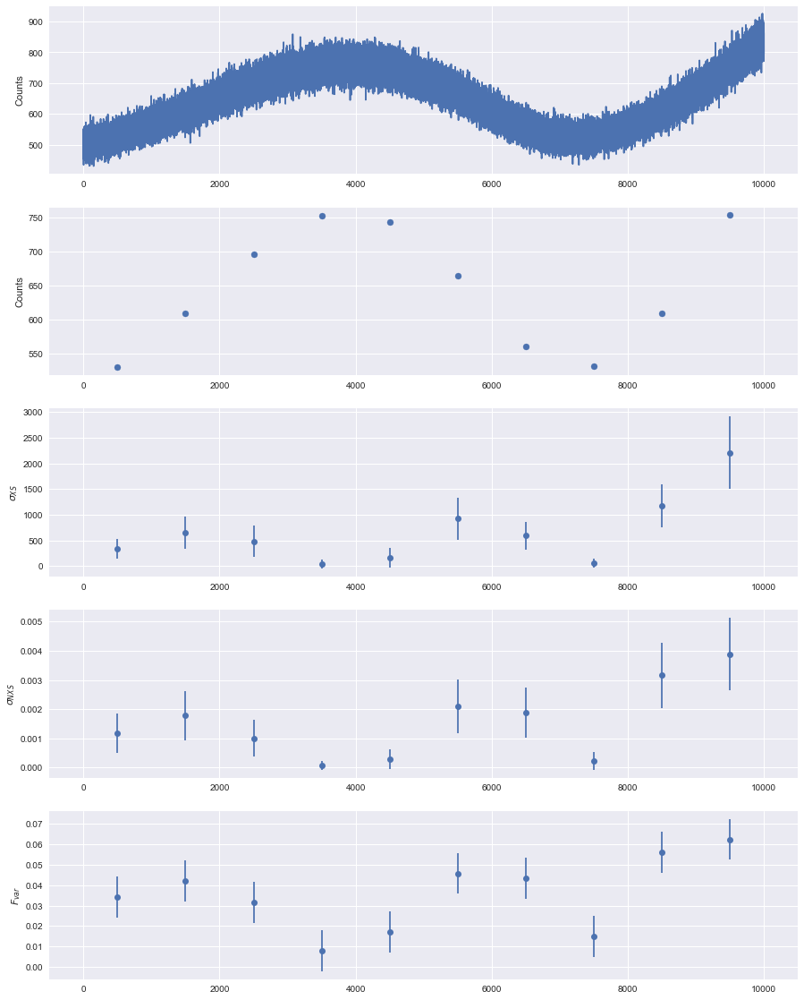

[1]:
%load_ext autoreload
%autoreload 2
%matplotlib inline
import matplotlib as mpl
import seaborn
mpl.rcParams['figure.figsize']=(15.0,8.0)
mpl.rcParams['font.size']=12 #10
mpl.rcParams['savefig.dpi']=100 #72
from matplotlib import pyplot as plt
import stingray as sr
from stingray import Lightcurve, Powerspectrum, AveragedPowerspectrum, Crossspectrum, AveragedCrossspectrum
from stingray import events
from stingray.events import EventList
import glob
import numpy as np
from astropy.modeling import models, fitting
R.m.s. - intensity diagram¶
This diagram is used to characterize the variability of black hole binaries and AGN (see e.g. Plant et al., arXiv:1404.7498; McHardy 2010 2010LNP…794..203M for a review).
In Stingray it is very easy to calculate.
Setup: simulate a light curve with a variable rms and rate¶
We simulate a light curve with powerlaw variability, and then we rescale it so that it has increasing flux and r.m.s. variability.
[2]:
from stingray.simulator.simulator import Simulator
from scipy.ndimage.filters import gaussian_filter1d
from stingray.utils import baseline_als
from scipy.interpolate import interp1d
np.random.seed(1034232)
# Simulate a light curve with increasing variability and flux
length = 10000
dt = 0.1
times = np.arange(0, length, dt)
# Create a light curve with powerlaw variability (index 1),
# and smooth it to eliminate some Gaussian noise. We will simulate proper
# noise with the `np.random.poisson` function.
# Both should not be used together, because they alter the noise properties.
sim = Simulator(dt=dt, N=int(length/dt), mean=50, rms=0.4)
counts_cont = sim.simulate(1).counts
counts_cont_init = gaussian_filter1d(counts_cont, 200)
[6]:
# ---------------------
# Renormalize so that the light curve has increasing flux and r.m.s.
# variability.
# ---------------------
# The baseline function cannot be used with too large arrays.
# Since it's just an approximation, we will just use one every
# ten array elements to calculate the baseline
mask = np.zeros_like(times, dtype=bool)
mask[::10] = True
print (counts_cont_init[mask])
baseline = baseline_als(times[mask], counts_cont_init[mask], 1e10, 0.001)
base_func = interp1d(times[mask], baseline, bounds_error=False, fill_value='extrapolate')
counts_cont = counts_cont_init - base_func(times)
counts_cont -= np.min(counts_cont)
counts_cont += 1
counts_cont *= times * 0.003
# counts_cont += 500
counts_cont += 500
[52.83292539 52.83104461 52.82542772 ... 64.26625716 64.25516327
64.24864925]
[7]:
# Finally, Poissonize it!
counts = np.random.poisson(counts_cont)
plt.plot(times, counts_cont, zorder=10, label='Continuous light curve')
plt.plot(times, counts, label='Final light curve')
plt.legend()
[7]:
<matplotlib.legend.Legend at 0x106983978>

R.m.s. - intensity diagram¶
We use the analyze_lc_chunks method in Lightcurve to calculate two quantities: the rate and the excess variance, normalized as \(F_{\rm var}\) (Vaughan et al. 2010). analyze_lc_chunks() requires an input function that just accepts a light curve. Therefore, we create the two functions rate and excvar that wrap the existing functionality in Stingray.
Then, we plot the results.
Done!
[8]:
# This function can be found in stingray.utils
def excess_variance(lc, normalization='fvar'):
"""Calculate the excess variance.
Vaughan et al. 2003, MNRAS 345, 1271 give three measurements of source
intrinsic variance: the *excess variance*, defined as
.. math:: \sigma_{XS} = S^2 - \overline{\sigma_{err}^2}
the *normalized excess variance*, defined as
.. math:: \sigma_{NXS} = \sigma_{XS} / \overline{x^2}
and the *fractional mean square variability amplitude*, or
:math:`F_{var}`, defined as
.. math:: F_{var} = \sqrt{\dfrac{\sigma_{XS}}{\overline{x^2}}}
Parameters
----------
lc : a :class:`Lightcurve` object
normalization : str
if 'fvar', return the fractional mean square variability :math:`F_{var}`.
If 'none', return the unnormalized excess variance variance
:math:`\sigma_{XS}`. If 'norm_xs', return the normalized excess variance
:math:`\sigma_{XS}`
Returns
-------
var_xs : float
var_xs_err : float
"""
lc_mean_var = np.mean(lc.counts_err ** 2)
lc_actual_var = np.var(lc.counts)
var_xs = lc_actual_var - lc_mean_var
mean_lc = np.mean(lc.counts)
mean_ctvar = mean_lc ** 2
var_nxs = var_xs / mean_lc ** 2
fvar = np.sqrt(var_xs / mean_ctvar)
N = len(lc.counts)
var_nxs_err_A = np.sqrt(2 / N) * lc_mean_var / mean_lc ** 2
var_nxs_err_B = np.sqrt(mean_lc ** 2 / N) * 2 * fvar / mean_lc
var_nxs_err = np.sqrt(var_nxs_err_A ** 2 + var_nxs_err_B ** 2)
fvar_err = var_nxs_err / (2 * fvar)
if normalization == 'fvar':
return fvar, fvar_err
elif normalization == 'norm_xs':
return var_nxs, var_nxs_err
elif normalization == 'none' or normalization is None:
return var_xs, var_nxs_err * mean_lc **2
[9]:
def fvar_fun(lc):
return excess_variance(lc, normalization='fvar')
def norm_exc_var_fun(lc):
return excess_variance(lc, normalization='norm_xs')
def exc_var_fun(lc):
return excess_variance(lc, normalization='none')
def rate_fun(lc):
return lc.meancounts, np.std(lc.counts)
lc = Lightcurve(times, counts, gti=[[-0.5*dt, length - 0.5*dt]], dt=dt)
start, stop, res = lc.analyze_lc_chunks(1000, np.var)
var = res
start, stop, res = lc.analyze_lc_chunks(1000, rate_fun)
rate, rate_err = res
start, stop, res = lc.analyze_lc_chunks(1000, fvar_fun)
fvar, fvar_err = res
start, stop, res = lc.analyze_lc_chunks(1000, exc_var_fun)
evar, evar_err = res
start, stop, res = lc.analyze_lc_chunks(1000, norm_exc_var_fun)
nvar, nvar_err = res
plt.errorbar(rate, fvar, xerr=rate_err, yerr=fvar_err, fmt='none')
plt.loglog()
plt.xlabel('Count rate')
plt.ylabel(r'$F_{\rm var}$')
[9]:
<matplotlib.text.Text at 0x1140ab588>

[10]:
tmean = (start + stop)/2
[11]:
from matplotlib.gridspec import GridSpec
plt.figure(figsize=(15, 20))
gs = GridSpec(5, 1)
ax_lc = plt.subplot(gs[0])
ax_mean = plt.subplot(gs[1], sharex=ax_lc)
ax_evar = plt.subplot(gs[2], sharex=ax_lc)
ax_nvar = plt.subplot(gs[3], sharex=ax_lc)
ax_fvar = plt.subplot(gs[4], sharex=ax_lc)
ax_lc.plot(lc.time, lc.counts)
ax_lc.set_ylabel('Counts')
ax_mean.scatter(tmean, rate)
ax_mean.set_ylabel('Counts')
ax_evar.errorbar(tmean, evar, yerr=evar_err, fmt='o')
ax_evar.set_ylabel(r'$\sigma_{XS}$')
ax_fvar.errorbar(tmean, fvar, yerr=fvar_err, fmt='o')
ax_fvar.set_ylabel(r'$F_{var}$')
ax_nvar.errorbar(tmean, nvar, yerr=nvar_err, fmt='o')
ax_nvar.set_ylabel(r'$\sigma_{NXS}$')
[11]:
<matplotlib.text.Text at 0x118bf6eb8>

[ ]:
[ ]: